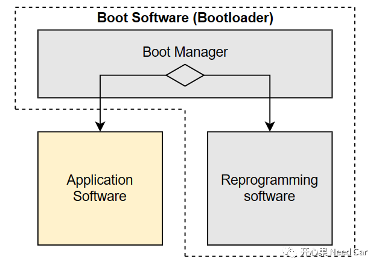
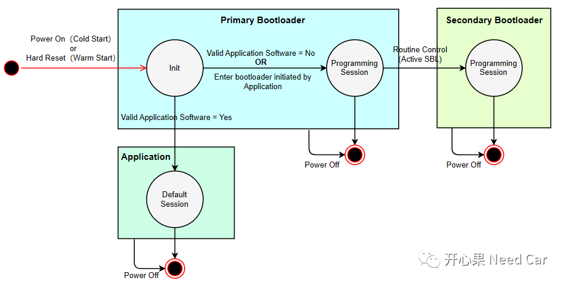
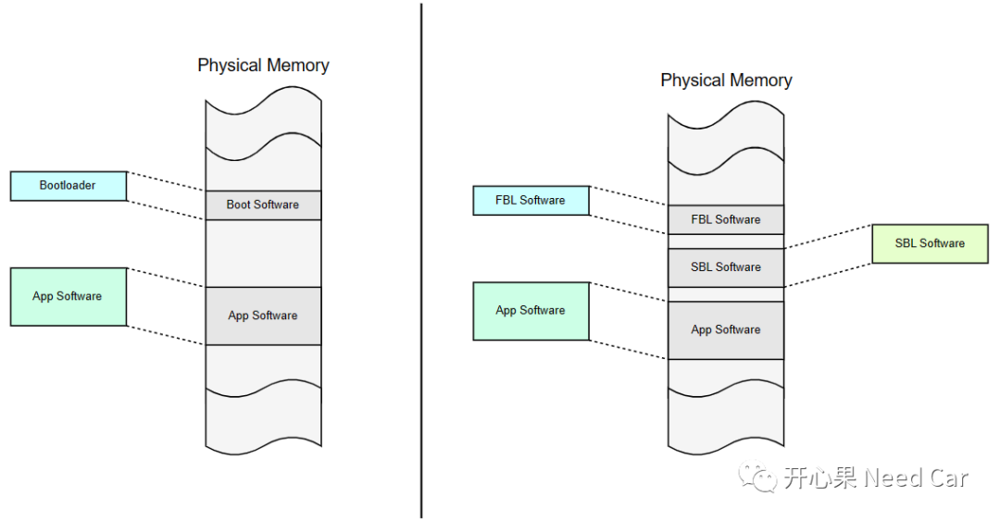

从事汽车嵌入式开发的小伙伴，对Bootloader并不陌生。Bootloader存在的意义：更新Application程序。那么，为什么又来一个SBL（Secondary Bootloader）呢？本文，聊聊SBL。主要讨论以下几点内容：
- SBL与FBL（Frist/Primary Bootloader）关系
SBL的本质就是Reprogramming Software，和我们经常提到的"Bootloader"作用一样，为更新Application而生。认识SBL之前，回忆一下Bootloader的概念，Boot Software(Bootloader) = Boot Manager + Reprogramming Software。Bootloader和14229规范中的Boot Software等同。
- Reprogramming Software：更新软件程序，主要更新Application程序。
Boot Manager、Reprogramming Software、Application Software以及Bootloadr的对应关系如下所示：

通过上图，可以看出，程序运行到Boot Manager以后，通过一些条件判断，决定进入Application Software还是Reprogramming Software。如果进入Application Software，则意味着功能运行；如果进入Reprogramming Software，则意味着需要更新Application Software。
为什么需要SBL呢？回答这个问题之前，先了解一下，增加SBL以后，软件Layout的变化。本文讨论的Layout，示意如下：

如上图，可以看出一个问题：在任何程序运行中，均可能出现Power Off（一般情况，此种异常出现概率不大）。我们知道：Bootloader的主要作用是更新Application Software，如果仅使用一套刷写流程，Bootloader一般不需要做更改。但是，整车中，ECU的数量众多，刷写流程不尽相同，如果不能共用一套刷写流程，意味着需要不同的Bootloader程序。再者，随着软件更新迭代，即使相同的ECU，由于软件版本的改动，原有的刷写流程也可能不再适用，需要更新Bootloader。再或者，发现了Bootloader程序存在潜在Bug，需要更新Bootloader程序。如果更新Bootloader程序，就会存在上述的Power Off风险，进而导致Bootloader程序更新失败，Bootloader失效的最终后果：对应的ECU不再具备更新Application Software的能力。这里不讨论调试器刷写，因为整车销售到终端用户以后，只能通过OBD接口或者OTA方式升级Application，而这两种方式，均需要依赖Bootloader程序，如果Bootloader程序不可用，对应的ECU就不能正常使用。
所以，针对Bootloader更新失败这种工况，有没有一种可能：一个程序专门刷写Reprogramming Software，这个程序仅出厂烧录一次，以后永远不更新。这样，即使刷写Reprogramming Software失败，还可以重新刷写Reprogramming Software，之后，Reprogramming Software再更新Application程序。这样，就不会出现ECU不可用的情况。答：有，这就是FBL、SBL出现的意义。
FBL依然保留刷写程序的功能，但是，限定FBL仅刷写或者激活SBL，激活SBL以后，由SBL负责更新Application Software。
ECU冷启动或者硬复位（$ 11 01/81）以后，FBL先判断是否有更新App软件的需求，如果需要更新App程序，则进入FBL的编程会话（Programming Session，对应诊断服务$10 02/82）。之后，可以通过一个例程控制服务（eg：$31 01 Xx Xx）激活SBL，让SBL更新App程序；再者，程序进入FBL以后，如果App程序无效，也可以进入FBL编程会话，激活SBL，更新App程序。使用SBL的优势：如果App程序的刷写流程有改动，仅修改SBL，以适配App程序的刷写流程即可。即使在更新SBL的时候，出现Power Off的异常工况，也不影响FBL功能，因为FBL一直存在ECU内存（PFlash）中。ECU重新供电以后，仍然可以使用FBL更新SBL，之后再由SBL更新App程序。增加SBL以后，意味着ECU的内存至少需要划分三个部分：FBL、SBL、App。这里的FBL还是像之前一样，负责引导程序或者更新程序。这里的引导程序，是引导程序进入App或者SBL，而更新程序是指更新SBL。
不带SBL与带SBL的ECU layout内存示意如下所示：
补充：实际工程中，虽然OEM要求使用FBL、SBL。但是，很多供应商考虑Bootloader的稳定性，还是沿用了之前的模式，只是把Flash Driver称为SBL，并不是真正意义上的SBL。
点击下方关注，一起聊聊Autosar/嵌入式，如果需要，联系作者进群，给你更专业的解答